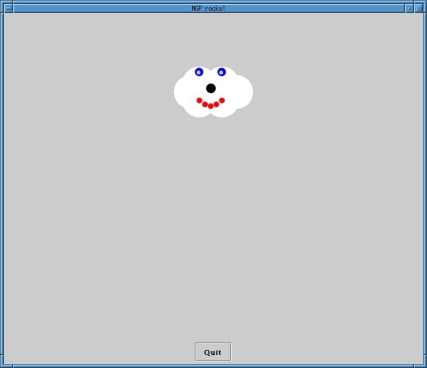
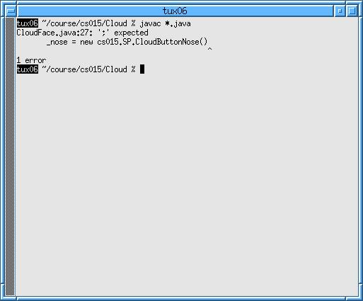

|
|
PREVIOUS Emacs |
NEXT Appendix |
|
|
|
PREVIOUS Emacs |
NEXT Appendix |
|
You are now going to use everything that you have learned in the previous sections to complete your first programming assignment. We are going to walk you step-by-step through the general process you should use to complete all of your projects in CS15, and, at the end, you will have your first, fully-functional program!
If you find that you are running out of time, you may want to stop working and come back to this. This section will be most useful if you take your time and understand it. If you do decide to stop, make sure you get back to this and hand it in by Monday, September 15th at 5:00 pm.
The TAs have assigned you an easy warm-up project, designed especially for this tutorial, called CloudFace. When it is completed, CloudFace will open a window that looks like this:

In order to write a program, you'll need to write some Java code. Programming in Java is writing lines of text that act as instructions for the computer. These files are saved in the project directory that you will create. Once code has been written and saved, it is ready to be compiled. Provided your code is free of syntax errors, the compiler converts your Java code into a lower-level language (Java bytecode) that can be executed (run) by the computer. If errors are found, the java compiler will list them for you to correct. If you change your code, you must save and recompile your java files before the changes will take effect.
To give you an idea of what to expect, these are the steps we are going to follow. Each is explained in more detail below:
Each assignment in CS15 will have an Assignment Sheet. Normally we will hand out paper copies in class and post a copy on the website. For this assignment, we don't have a printed copy because we take you through it step-by-step, but you can find the Assignment Sheet online at http://www.cs.brown.edu/courses/cs015/current/Asgn/Cloud/CloudFace.html.
 Go to the above URL and read over the CloudFace specification.
Go to the above URL and read over the CloudFace specification.
A project is a collection of classes, packages, and documentation about these classes and packages, as well as support code. You will be making a project for each of your programming assignments. The project will basically correspond to a subdirectory of your cs015 directory.
In order to start programming, you will need to set up a project directory to put your files in. We call this installing a project. We have written a program that will take care of this process for you:
cs015_install <project name>
This command will set up a subdirectory of your
~/course/cs015 directory for you to work in. In
general, the name of the new directory will be the same as the project
name that you specified.
During installation, new "skeleton" files will be created in this subdirectory for you to edit. These files contain useful portions of the program that will save you some typing. NOTE: CS15 uses super, high-tech grading robots that require that your files be placed in the right place. Therefore, using this install program will ensure that your files are in the proper place and that everyone's happy!
 Enter
Enter cs015_install CloudFace in a
shell to install the CloudFace project.

cd into your ~/course/cs015/
directory and use ls to
verify that a directory "Cloud"
was created.

cd into the Cloud directory
and ls to verify that it contains 2 files:
App.java and
CloudFace.java.
Since Java is written completely with classes, the first thing to do is figure out what class you would like to start with. As per the suggestions in the CloudFace assignment sheet, you should work incrementally. Therefore, your first task is to get an empty window to show up.
Part of the project installation put a file called
App.java in your
Cloud directory. App.java is a stencil class
for you to fill in. That is, we've written part of it already. You
need to add a couple of new lines of code to make it more functional,
but we'll get to that in a bit.
 Open the file
Open the file ~/course/cs015/Cloud/App.java
in Emacs. (Note: case matters. Opening "app.java" won't work.)
This class takes care of showing a window to display your program. Note that it is a "complete" program as far as Java is concerned because it is legal syntax, although, from a semantics point of view, it is an incomplete skeleton. It is syntactically legal but functionally incomplete. We will actually edit it in a second, but first we are going to take advantage of the fact that there is already some code written to show you how to compile and run your program.
We will now compile the code we wrote for you, both to show you how to compile and to make sure that we didn't make any mistakes (always a good thing to check!). Although what is written is not a final solution, it should get a window with a quit button to show up, which is a good place to start. Compiling will determine if the syntax is valid, and, if not, it will tell you where it spots errors. First, you have to get to the directory where your code is if you aren't there already:
 Go to
Go to ~/course/cs015/Cloud/ in a shell.
The program called javac is the standard Java
compiler that we will be using in CS15. It is invoked from the
command line in the shell.
javac <files>
The javac will Compile Java files. Type
javac and then the names of the Java files you want
to compile. All Java source files generally end in ".java".
Compiling will generate a ".class" file for each
class you've written. These files store the Java bytecodes.
To compile all the .java files in the current directory,
type javac *.java (* is a way of saying "all")
For every source file that ends in .java, a file with the
corresponding .class name will be created.
 Type
Type javac *.java in the shell to
compile the App class.
If you have not touched the code or saved over anything, there should be no errors. If you did make any changes to the code in Emacs, use the "Undo" command to restore it to its previous state. If you saved it at any time, then you should save it again after performing the Undos. If you do encounter errors (we'll show you some later), you have to return to Emacs and fix them.
Often in Linux, no news is good news. Successful compilation results in
nothing being printed to the shell. After a successful compilation, you can
type
ls in your shell, and you should see a
new App.class file.
You can run your project after a successful compilation. To run Java
applications, you will be using a program called java:
java <classname>
This command will run a specified java class. For now, just accept a
little of this as magic, but, basically, you can run any class that
has a method called main() in it (called a "mainline").
We have written a
main() method for you in the App class. While we
will explain the mainline later in the course, we will always write one
for you in the skeleton code, and it will always be in the App class.
 Type
Type java Cloud.App to run CloudFace's
App class.
A blank window with a quit button should show up. If you didn't type this command exactly as shown (with capital 'C' and 'A'), you'll get an error message.
 Close your program with the "Quit" button.
Close your program with the "Quit" button.
You're probably not too impressed by this blank window, so, lets get a CloudFace in there. You have now made your first pass through the programming process, getting the empty window to show up. We are now going to repeat steps 3, 4, and 5 to add more pieces to your program. You should always program incrementally. That way, you know where to look if any errors occur and you don't build errors upon errors. It is really depressing to write pages of code and then get 30 compile errors...
We can model a CloudFace with a (you guessed it!) CloudFace class. There is no existing CloudFace class in the empty CloudFace.java file. It is your responsibility to add one--that's really the assignment.
Java expects to have each class declared in a file of the same name (including capitalization). We'll go through creating and filling in a simple class called CloudFace.
 In Emacs open up the file
In Emacs open up the file CloudFace.java
in the Cloud directory.
This file will eventually contain the code for the class called CloudFace.
 Edit
Edit CloudFace.java until it looks like
this: (Hint: Don't type. Steal this from version of this
tutorial linked off of the CS15 web page.)
/* The following line tells which package this class should
belong in. The name must be the same as the subdirectory
in which this file is stored. */
package Cloud;
/**
* This class models the Cloud's face.
*
* @author < your name here >
*/
public class CloudFace {
private cs015.SP.CloudShape _shape;
private cs015.SP.CloudRoundEyes _eyes;
private cs015.SP.CloudButtonNose _nose;
private cs015.SP.CloudHappyMouth _mouth;
public CloudFace() {
_shape = new cs015.SP.CloudShape();
_eyes = new cs015.SP.CloudRoundEyes();
/* The following line is missing a semicolon, therefore
it will not compile and you will get to see what
compiler errors look like in the shell. */
_nose = new cs015.SP.CloudButtonNose()
_mouth = new cs015.SP.CloudHappyMouth();
}
} // End of code
 Save this file.
Save this file.
Note: If you had mistyped the filename "CloudFace" here, or decided to name the class something different, this class would not compile. Each public class you write must be located in a file of the same name as the class.
In a shell, recompile your Java code to see if your newly created class uses the proper Java syntax and grammar.
 From the
From the Cloud project directory, use
javac *.java (if you're in the same shell
you used before, you can hit the up arrow a few times and
see previously typed commands reappear in reverse
order) to compile your new code. The
"*.java" will take into account all
Java files. You don't need to worry about overwriting your old
class files, that's what re-compilation is supposed to do.
Successful compilation results in no messages being displayed. You should see, however, a message about an error in this compilation:

This message displays a filename, followed by a line number, and then the error message "';' expected." In addition, the line where the error occurred is displayed. As the error says, there is a semi-colon missing from the end of the line. (Not all compile errors are this easily interpreted.) You should use Emacs to correct the error, save the file, and then compile again.
 In Emacs, go to the specified line number by using the "Goto
Line..." command in the View Menu and specifying the line
number. In this small file it might be easier to just
move the cursor where you want it using the arrow keys.
In Emacs, go to the specified line number by using the "Goto
Line..." command in the View Menu and specifying the line
number. In this small file it might be easier to just
move the cursor where you want it using the arrow keys.
 Add a
Add a ';' (a semicolon) to the end of this
line.
 Save the file.
Save the file.
 Recompile the Java files using
Recompile the Java files using javac
*.java in a shell.
The file should now compile successfully. If it doesn't, fix any other errors you get and continue recompiling.
This is merely one class that will draw a Cloud's face. Now we need to make an "instance" of this class. That is, we've declared that there can be such a thing as a CloudFace, but we have yet to make one.
You can run the program again if you want to. Keep in mind
though, that we have not changed the App.java
file. Therefore, the App class is not any different than it
was. Since the App class is the only class that you know is
instantiated by java, there should not yet be a
change in the way your program runs. The CloudFace must be
instantiated in the App for anything different to take
place.
Now it's time to instantiate a CloudFace.
 Bring up the
Bring up the App.java file
and edit it to make it look like this:
package Cloud;
/**
* This is the App class. In the constructor you should instantiate
* your top-level object.
*
* @author
**/
public class App extends cs015.SP.Frame {
private CloudFace _face;
public App() {
super();
_face = new CloudFace();
}
/**
* This is called a mainline. When you type "java Cloud.App"
* this method gets called automatically. Ignore the "String[] args"
* for now; you'll never need it in CS15. All this method does is
* instantiate a real instance of your App class, which means that the
* constructor will be called. So if you have your code in the constructor
* you're all set.
*
* DO NOT CHANGE THIS CODE!
*/
public static void main(String[] args) {
App app = new App();
}
}
 Make sure to save
Make sure to save App.java and then
recompile all the Java files. There should be no errors.
Your program should be all set to run. Go ahead and give it a
try by typing java Cloud.App in a shell.
You'll always want to make sure that your
program is runnable after a fresh compilation before turning it
in. This is just in case some small error was made, maybe even
accidentally pressing the keyboard.
If your program compiles, you can turn it in
electronically. It
is preferable for your program to run correctly as well, of course,
but it will still work if it doesn't. Use the
cs015_handin command to turn in your projects.
cs015_handin <Project Name>
This command will hand in the specified Project to the CS15 TAs. If you misspell or omit the Project Name, a list of valid names will be given. This program will attempt to compile your Java code and make the appropriate entries. You may hand projects in more than once. Keep in mind that the last handin is the one that counts.
 Type
Type cs015_handin CloudFace in a shell to
turn in your assignment.
 Follow the instructions.
Follow the instructions.
You're done!
|
|
PREVIOUS Emacs |
NEXT Appendix |
|